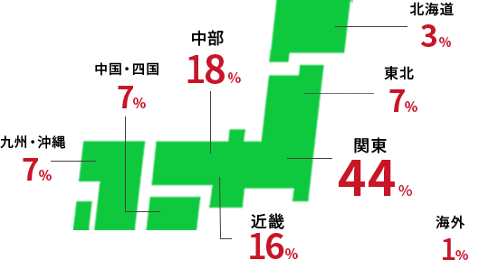
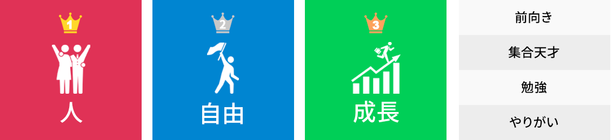
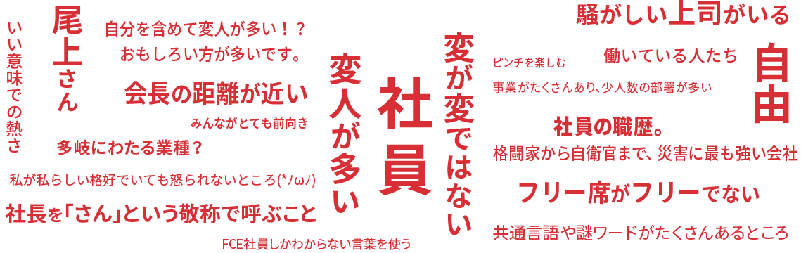

INFOGRAPHICS
1分でわかるFCE
男女比
00％
00％
新卒・中途入社比
新卒00％
中途00％
職種別比率
契約社員00％
一般職00％
総合職00％
年齢比
00％
20代
00％
30代
00％
40代
00％
50代
勤続年数
- 3年未満
-
00%
- 3年〜5年未満
-
00%
- 5年〜10年未満
-
00%
- 10年〜15年未満
-
00%
- 15年以上
-
00%
出身地
北海道00％
東北00％
関東00％
中部00％
近畿00％
中国・四国00％
九州・沖縄00％
海外00％

パパ・ママ比率
00％
子ども教育手当支給者の割合
育休から復職したママさんも大勢活躍しています
血液型
00％
A
00％
B
00％
O
00％
AB
00％
不明
学生時代の部活動
- サッカー00人
- 野球00人
- バスケットボール00人
- その他…
- 吹奏楽、バレーボール、テニス、陸上、卓球、剣道、軽音楽、バドミントンなど
兄弟構成
長男・長女00％
末っ子00％
一人っ子00％
通勤時間
- 00％〜20分
- 00％〜40分
- 00％〜1時間
- 00％〜1時間以上
ランチにかける時間
30分以内00％
趣味
- 旅行00人
- 仕事（笑）00人
- 音楽00人
- 食べ歩き・飲み歩き・カフェ巡り
- スポーツ
- その他…
- 寺社仏閣巡り、ハンドメイド、スノボ、料理、ビリヤード、ダイビングなど
休みの日の過ごし方
- 外食・飲み00人
- 家事掃除・洗濯など00人
- スポーツジム・ランニングなど00人
- 家族
- ショッピング
買い物
- その他…
- ドライブ、カフェ巡り、参拝、散歩、展示会・美術館、ライブ・舞台鑑賞など
FCEのいいところ

人
- 心から尊敬でき、信頼できる最高の仲間ばかりです！
- 風通しがよく社員が明るい。でも真面目なところ。
- 働いている人たち
- 常に刺激が山のようにあり、おもしろい発想をする人が各所にいるので新しい感覚と考え方を常にもらえる。
- フレンドリーなところ
- 人がとても魅力的
- みんな熱い！
- 人がよい！！
- 人。素晴らしい仲間や上司に恵まれています。
- 本当ーーーーに良い人ばかり。こんなに素直に真っすぐに仕事をしている人たちばかりの会社はないと思う！
- 高い目標を本気で追いかけられる人が多い
- リスペクトできる人が多い。
- 一人一人の本気の度合いが高く、本気で仕事にぶつかれるところ
- チャレンジが推奨され、先行人事で機会が与えられるところ
- 安心して会話できる方ばかりなところ
- 仲良い、まじで
- 親しみやすい人が多い
- 人がいい！悪意のある人がいないことがどんなに幸せなことか、と思います。
- 全社員が「本気」なところです
- 皆さんは悪口言わないし、噂が広がらないこと
- 全員がお互いの成功を心から喜び、温かい雰囲気があるところ
- 人や人との繋がりを大事にする、人を育てる会社。
- 常により良いを目指し、進化し続ける、精鋭部隊。
- 経営陣をはじめ、みんな個性的で面白い。
- 仕事に本気で取り組んでいる人が多いこと！
- 目標に対して一途な人ばかり
- 役職にかかわらず人と人の距離が近い！
- 社歴や年齢に関係なくフラットでフレンドリーな人間関係が良いと思います。
- みんなが惜しみなく手を差し伸べてくれる
- 貢献したい人と事があるところ
- 人！みんな優しくて温かい！仕事ができる！
- 上下関係がフラット（若手の意見にも耳を傾ける、取り入れる）
- 社員全員が情熱的であるところ
- 皆様面倒見がともかくいいです！
- 楽しみながら仕事をしている。
- チーム力！
- みんな一生懸命。
- 人を大切にしている
- 皆さんがとってもやさしい！
- 面白い人が多い
- 主体的である人が多い。
- 全員が明るい!!
- 皆、明るくてよい人が多い！
- 面倒見が良い人が多いです。
自由
- オープンで自由
- 自由と責任の両方が与えられる点
- いろいろなことにチャレンジができる
- 個人の自由度が高く仕事の成果とそのスタンス（プロセスと人格）で評価されるため、やりがいがあること。
- 自分で企画できること
- 主体的な動きが求められ縛られないとこ。
- オープンな雰囲気
- 自由。
- トップダウンではなく、主体性を重んじる風土。
- 色々と自由なところ
- 自由
- 全ては自分次第なところ
成長
- 自分を成長させることに、みんなが意欲的であるところ。
- 個人の成長欲求が高い
- いつまでも成長し続けられる所（成長しないといられない）
- 自分次第で成長できる
- 成長機会がとても多いところ（特に新規事業の立上げフェーズに参加できるチャンス）
- 成長意欲が高い
- すごく数字に厳しく、すごく成長を求められ、すごく期待されているところ
- ポジティブで全員が高みを目指す風土
前向き
- 前向きでチャレンジングな人達が多く、刺激を受けること
- 結果前向きになれるところ
- 働いている人が、前向き。社会にとってとても価値ある仕事をしている。
- 全員が前を向いているところ
- 社員全員が向上心を持っていて、仕事に真剣、でも遊び心は忘れない素敵な方ばかり！
勉強
- 学べる環境が整っているところ
- 仕事のやり方が学べる。前職と今とでは全く仕事の仕方が変わりました！
- トップをはじめとして勉強熱心な人が多く刺激がある。
- また成長に対して投資をしてくれる。引き上げてくれるため非常に良い。
集合天才
- 集合天才
- 部署間を超えての事例共有があり、
- 他部署の活動からヒントを得ることが多い
- 前向きな人が多く、集合天才の理念に忠実
その他
- やりがいがあって楽しいです。
- 時間に融通がきくので子どもの行事や病気に対応ができる所
- 俺でも出世できる
- ロジカルさと泥臭さを持ち合わせているところ
- 意見を言いやすい。受け止めてくれる。
- 真摯に仕事に取り組む風土
- 一人ひとりが輝ける！
- 自分の実現したい事と今の仕事がリンクしており、その重なり合いを考えてくれている事。
- 働きがいがあり、働きやすい
- 出る杭は打たれない、尖れるところが素晴らしい。
- 若手が意見を言っても頭ごなしに否定されない。
- フレックスとフリーアドレス
- チームとしての成果を出す意識が全員にある
- 本気な所!笑
- 理不尽なところがない。
- やりがいがあって楽しいです。
- 自分がどうありたいか、どうなりたいか、を尊重してくれるところ。
FCEの変なところ

どっち派？
右脳派(感性、直感)？ 左脳派(論理)？
- 右脳
- 67％
- 左脳
- 33％
- 右脳
- 左脳
良いアイデアが思いついたら？
- すぐ行動
- 64％
- じっくり考えてから行動
- 36％
- すぐ行動
- じっくり考えてから行動
アウトドア派？インドア派？
- アウトドア
- 52％
- インドア
- 48％
- アウトドア
- インドア
重視するのは？
- 機能
- 52％
- デザイン
- 48％
- 機能
- デザイン
仕事とプライベートの切り替え方は？
- ON・OFFハッキリ
- 69％
- 仕事は趣味
- 31％
- ON・OFFハッキリ
- 仕事は趣味
理想の働き方は？
- マルチに働きたい
- 69％
- 1つの仕事を突き詰めたい
- 31％
- マルチに働きたい
- 1つの仕事を突き詰めたい
ナンバー・ワン派？ オンリー・ワン派？
- オンリー・ワン派
- 70％
- ナンバー・ワン派
- 30％
- オンリー・ワン派
- ナンバー・ワン派
タイムトラベルできるなら？
- 未来に行く
- 63％
- 過去に行く
- 43％
- 未来に行く
- 過去に行く
負けず嫌い度
00％